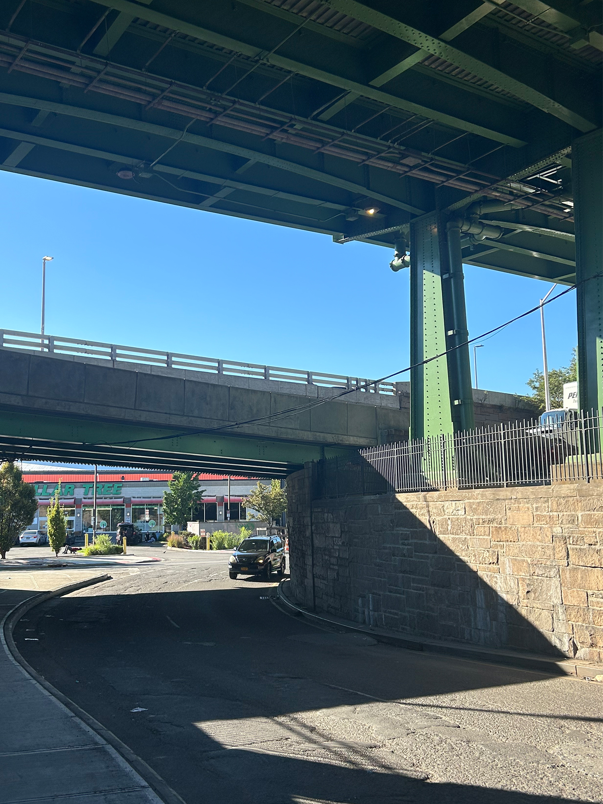
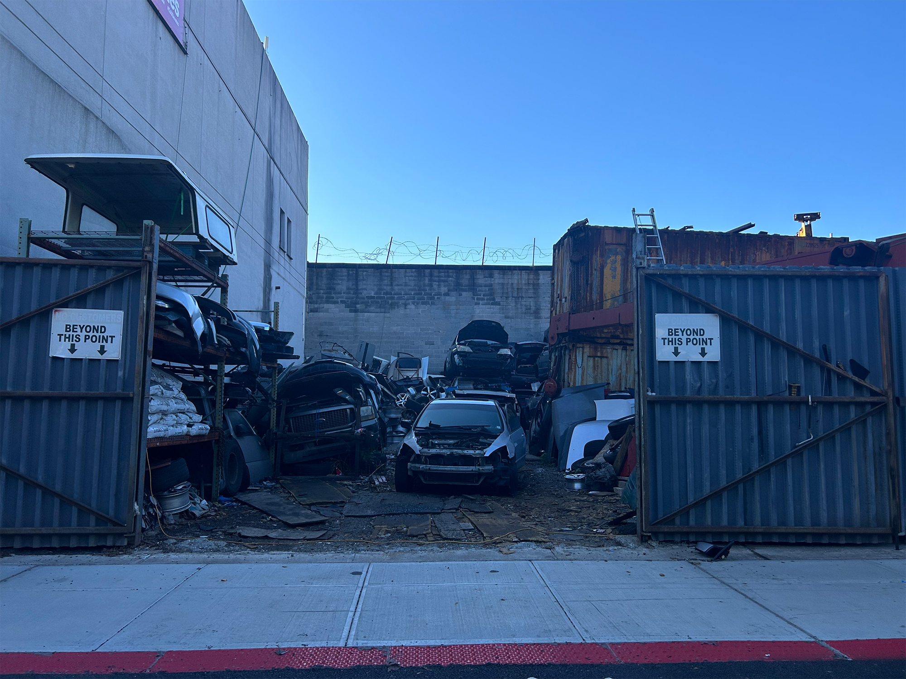
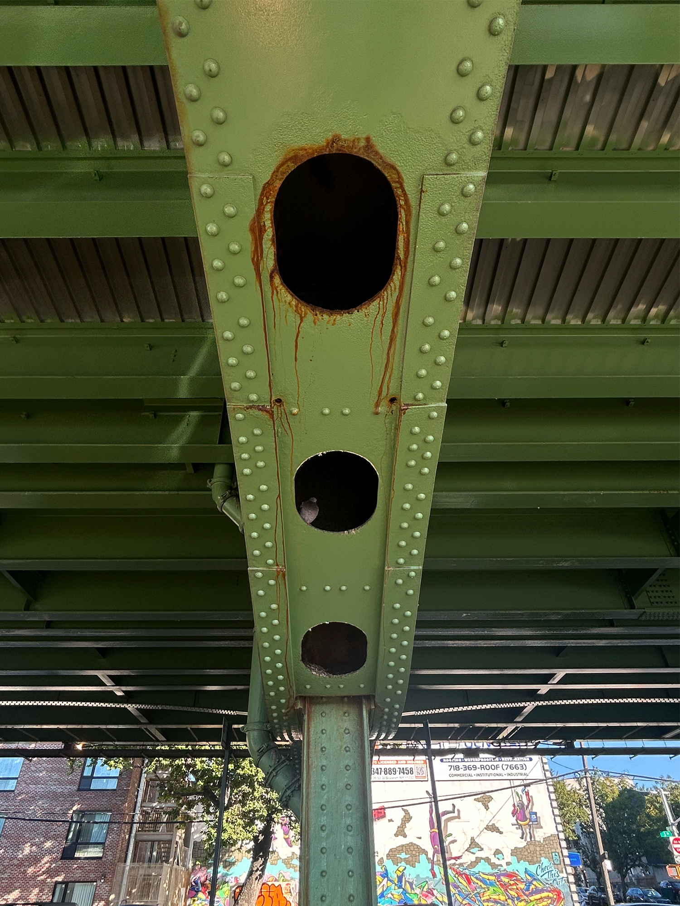
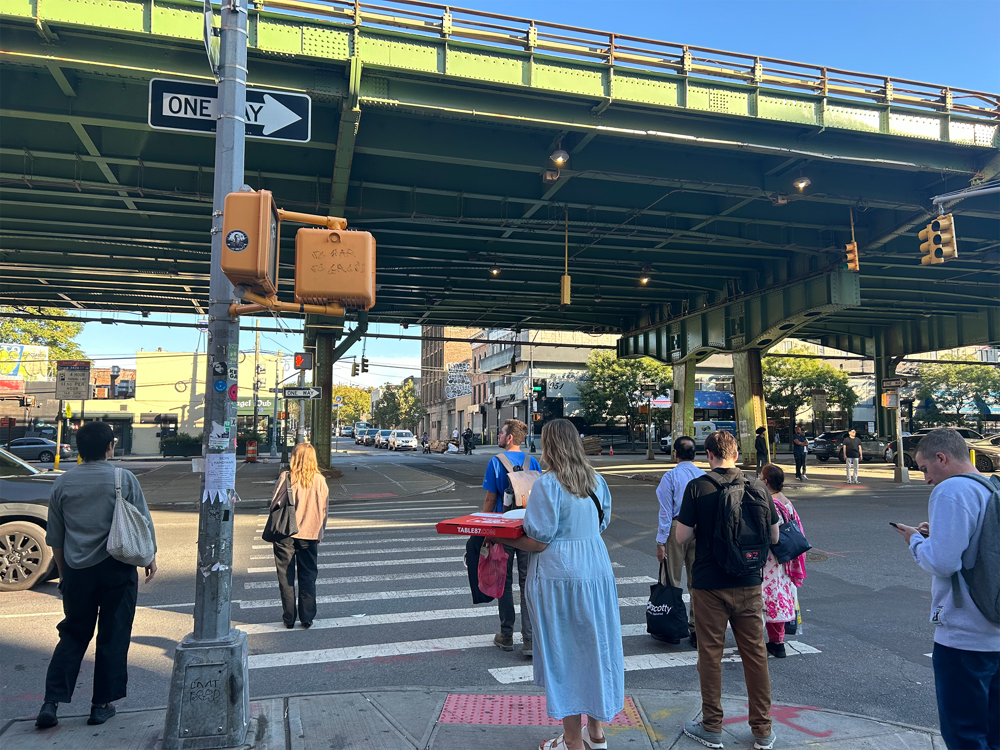

Under the BQE
How the highway created a place
By: Katie Pruden
Txt Img Multi

Standing at the end of my block on 17th street, the highway roars above my head

I walk by scrap yard and a pressure washer blasts in the distance

The highway rattles as it bears the weight of constant traffic

A crowd coming from Industry City waits to cross 36th street. The recent development has brought a different feel to the neighborhood.